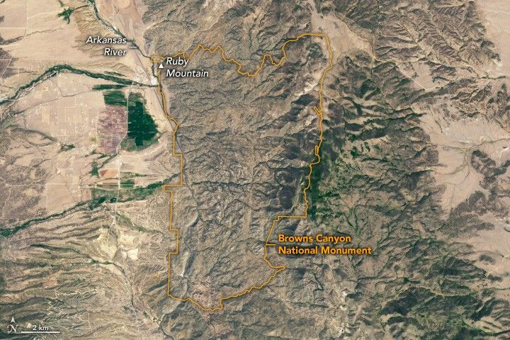

Browns Canyon National Monument
The canyons, rivers, and forests found in the Browns Canyon area of central Colorado have drawn people to the region for more than 10,000 years. Located along the upper Arkansas River Valley, between the communities of Buena Vista and Salida, the region has become a popular spot for outdoor recreation, especially whitewater rafting. Despite this human presence, the remote area remains exceptionally dark, making it ideal for stargazing.
By day, the region’s unique geology and dramatic range in elevation are apparent in natural-color satellite images. The OLI (Operational Land Imager) on Landsat 8 captured this image of the national monument on June 14, 2025. The monument, jointly managed by the Bureau of Land Management and the U.S. Forest Service, spans 34 square miles (88 square kilometers) in the Rocky Mountains.
A ground-based photo shows the range of landscapes within the national monument. It includes rough river water in the foreground, shrubby vegetation in the middle, and mountainous terrain in the background.
By night, the area appears as a dark expanse in satellite images. Mountainous terrain separates the monument from the urban glow of Colorado Springs, about 100 kilometers (65 miles) to the east, beyond the frame of the Landsat scene. This remote location, along with efforts to retrofit existing lighting, helped the monument gain recognition as an International Dark Sky Park in 2024.
Dark sky parks can be good places to observe natural sources of nighttime light, such as the Perseid meteor shower that occurs each year in mid- to late-August as Earth’s orbit intersects the trail of debris left by Comet Swift-Tuttle. In 2025, the shower was expected to peak overnight from August 12 to 13, though the light show would be competing with the glow of a waning gibbous Moon.